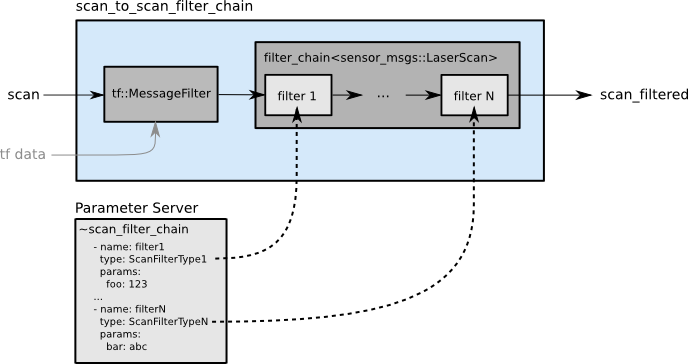
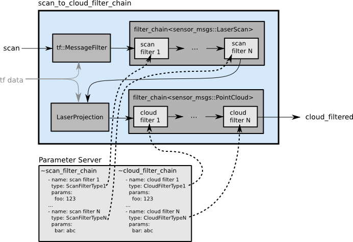

概述
此包laser_filters的主要目的是对sensor_msgs/LaserScan消息进行过滤处理。过滤是依赖于filter包的。目前，所有这些过滤器都直接在sensor_msgs/LaserScan上运行，但将来可能会添加处理sensor_msgs/PointCloud的过滤器。请查阅过滤器文档，了解过滤器和过滤器链是如何工作的。
这个包提供了两个节点，可以在内部运行多个过滤器。使用这些节点运行筛选器被认为是最佳实践，因为它允许多个节点在只执行筛选计算一次的情况下使用输出。节点是给定类型的过滤器链的最小包装器。以下是两种结点类型的工作区别
- scan_to_scan_filter_chain将一系列过滤器应用到sensor_msgs/LaserScan。
- scan_to_cloud_filter_chain首先将一系列过滤器应用到sensor_msgs/LaserScan，将其转换为sensor_msgs/PointCloud，然后将一系列过滤器应用到sensor_msgs/PointCloud。
Laser Filter 使用
每个Laser Filter都是一个独立的插件，由laser_filters包导出。这允许在配置文件中指定它们，该配置文件可以加载到sensor_msgs/LaserScan上的任意filter_chain模板中。你有两种方式使用
- 可以在c++中代码中直接进行Laser Filter的实例化
- 使用scan_to_scan_filter_chain和scan_to_cloud_filter_chain节点，并且配置相关参数即可
Filter chains 从ros的参数服务器配置，通过是通过yaml文件发布参数到参数服务器，Filter chains中指定的每个filter将按顺序应用。
每个filter配置包含一个用于调试目的的名称，一个用于插件的类型，以及一个参数(字典)。请参阅特定过滤器插件的文档，查看params字段中可以设置哪些变量。请参阅特定filter插件的文档，查看params字段中可以设置哪些变量。
Note，如果只使用FilterClass，则类型应该指定为pkg_name/FilterClass，因为在lunar之前，过滤器实现的匹配行为不一定与确切的名称匹配。
举一个使用的例子，在一个包名为，mypkg，在 scan_to_scan_filter_chain下设置了两个filter，然后启动 scan_to_scan_filter_chain
my_laser_config.yaml:
1 | scan_filter_chain: |
我们可以通过rosparam来把参数推送到ROS参数服务器
1 | $ rosparam load my_laser_config.yaml scan_to_scan_filter_chain |
然后启动scan_to_scan_filter_chain
1 | $ rosrun laser_filters scan_to_scan_filter_chain |
Laser Filter Nodes
scan_to_scan_filter_chain
scan_to_scan_filter_chain 是一个非常小的结点，它封装了filters::FilterChain<sensor_msgs::LaserScan>.的示例，此节点可用于在传入的激光扫描上运行此包中的任何filter。
如果设置了~tf_message_filter_target_frame参数，它将在运行filter_chain之前等待激光和target_frame之间的转换可用。


ros parameters
scan_filter_chain (list)
- [Required] The list of laser filters to load.
~tf_message_filter_target_frame (string)
- 在执行filter_chain之前，必须在当前时间存在转换的target_frame。这是内部传递给tf::MessageFilter的target_frame。如果没有设置此参数，则在每次新扫描到达时直接执行链。
sub Topics
scan (sensor_msgs/LaserScan)
pub Topics
scan_filtered (sensor_msgs/LaserScan)
ros
例子
my_laser_filter.launch:
1 | <launch> |
my_laser_config.yaml:
1 | scan_filter_chain: |
scan_to_cloud_filter_chain
scan_to_cloud_filter_chain是一个非常小的节点，它封装了filter::FilterChain和filter::FilterChain的实例。此节点可用于在任何过滤器。在执行激光滤波后，它将使用laser_geometry中的LaserProjection将每次扫描转换为点云。然后，它将运行任何基于点云的过滤，并最终发布生成的云。


ros paramerters
scan_filter_chain (list)
- [Required] The list of laser filters to load.
~cloud_filter_chain (list)
- [Required] The list of cloud filters to load.
~target_frame (string)
- [Required] The frame to transform the point_cloud into.
~high_fidelity (bool, default: false)
- 是否进行高保真变换。这种方法假设激光扫描仪在捕捉激光扫描时正在移动。高保真变换只有在目标帧被设置为固定帧时才能正确地工作。
sub Topics
scan (sensor_msgs/LaserScan)
pub Topics
cloud_filtered (sensor_msgs/PointCloud)
例子
my_laser_cloud_filter.launch:
1 | <launch> |
my_laser_config.yaml:
1 | scan_filter_chain: |
my_cloud_config.yaml:
1 | cloud_filter_chain: |
Laser Filter Plugins
本节介绍在包Laser filter里面的过滤插件，他们的作用和参数